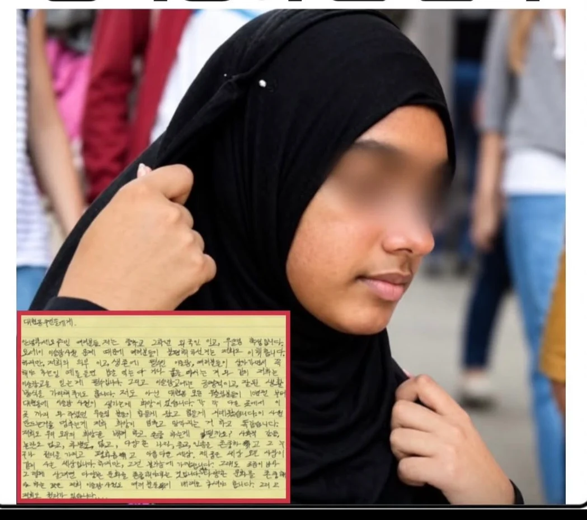

대현동 주민들에게
안녕하세요 주민 여러분들 저는 중학교 2학년 외국인이고, 무슬림 학생입니다. 요세이 이슬람 사원 문제 때문에 여러분들이 불편해하신거는 저희도 이해합니다. 하지만, 저희의 의무이고, 생존에 필수인 이슬람, 여러분들이 살아가면서 꼭 해야 하는 일 예를 들면 밥을 먹는다거나 물을 마시는 거와 같이 저희는 이슬람교를 믿는 게 필수입니다. 그리고 이슬람교에는 긍정적이고, 잘된 생활방식을 가리쳐주기도 합니다.
저도 아닌 대현동 모든 무슬림분들이 10년전부터 대현동에 이슬람 사원이 생기는게 희망이었습니다. 각각 다른 곳에서 이곳까지 와 주셨던 무슬림 분들이 힘들게 왔고 힘들게 지내왔습니다. 이 사원을 만드는거를 멈추는게 저희 희망이 멈추고 망가지는 거 하고 똑같습니다.
저희도 우리 모두의 희망을 배려하고 존중하는 게 어떨까요? 사회적 갈등, 논란도 없고, 차별도 없고, 다양한 나라, 종교, 인종을 존중하고 그 누구나 권리를 가지고 평화롭고 아름다운 세상. 제 꿈은 세상 모든 사람이 같이 사는 세상입니다.
하지만, 그건 불가능에 가깝습니다. 그래도 조금이나마 그렇게 살려면 다양한 문화를 존중해야만 하는 것입니다. 그리고 다양한 문화를 존중해야 하는 것은 저희 이슬람 사원도 여러분들이 배려를 하셔야 합니다. 그리고 저희도 존중받을 권리가 있습니다.... 읽어주셔서 감사합니다.
니네 나라에서 돼지고기 먹을 수 있게 허용하면 생각해볼게
원래 이런 건 상호주의야
외교의 기본임